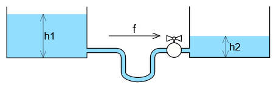
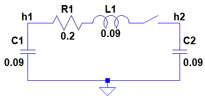
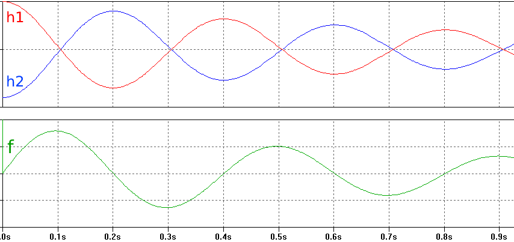
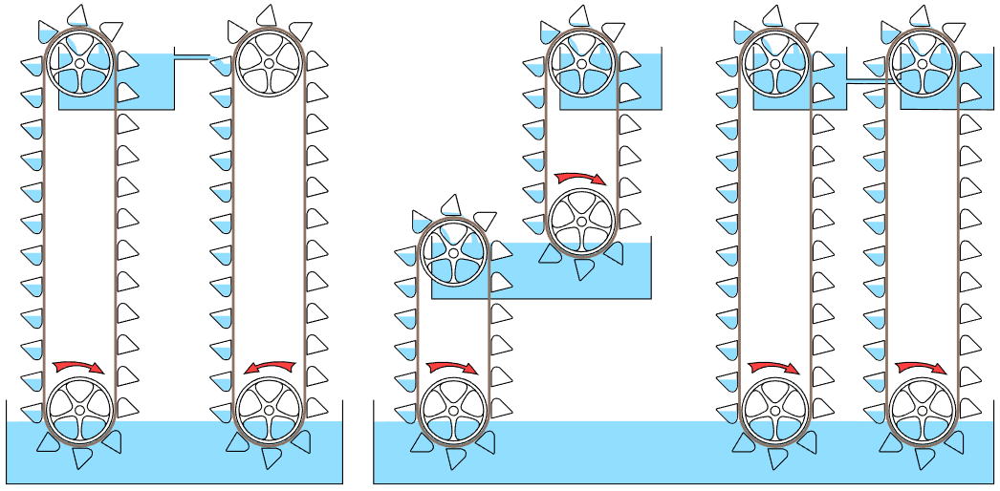
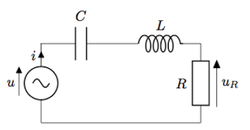
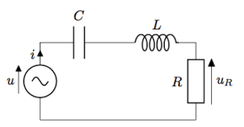
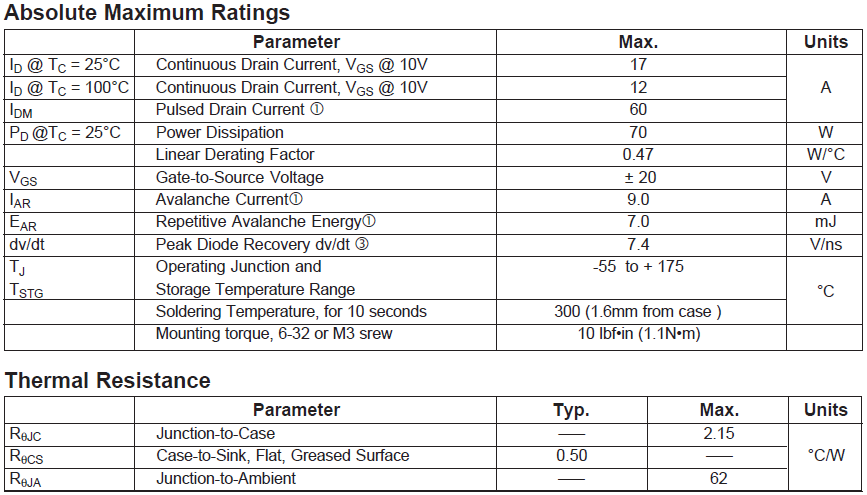

2. The Analogies
The most complete analogies between electricity and other domains of physics are those which extend to systems represented by differential equations of the second degree. But some equations limited to the first degree are useful too.
To establish an analogy, one has to select two fundamental quantities similar to voltage and current. It his helpful but not mandatory to select one which represent a potential (some capability of action depending on the position in space, which exists event while the system is idle), and the other which represents a flow, something in motion
In electricity, the quantity which is commonly named voltage is more precisely the "electric potential difference" and in some cases "electromotive force".
It is worth remarking that the french word for voltage is "tension", which means "pull" or "traction", while the chinese word for voltage is 电压 which means "electric pressure".
The scientists who created this vocabulary for electricity were surely inspired by the hydraulic analogy, this is the one to begin with.
2.1 The Hydraulic Analogy
When a mass is lifted to a higher altitude, its gravitational potential is increased, at the cost of some energy.
An altitude difference in a fluid like water creates a pressure, which in turn creates a force when applied to a given solid area.
So the analogy between voltage and altitude or pressure, seems very consistent with the vocabulary, coming together with the analogy between electric current and fluid flow
To make the analogy work, we need first to state that the fluid density and the gravitational acceleration are fixed.
Then we may represent the potential as a pressure or as a height, and the flow as a volume flow or a mass flow, these choices are arbitrary.
2.1.1 Legacy analogy

The first table "legacy" is established with height and mass flow as fundamental quantities, with kgf as force unit (apologies to Mr Newton) in order to keep the equations simpler
| Hydraulic domain (legacy units) | Electrical domain |
| Pressure (m) h | Voltage (V) V |
| Flow (kg/s) f | Current (A) I |
| Quantity of fluid (kg) M = f*t | Electric Charge (C) Q = I*t |
| Energy (kgf.m) W = M*h = h*f*t | Energy (J) W = V*Q = V*I*t |
| Power (kgf.m/s) P = h*f = W/t | Power (W) P = V*I = W/t |
| Restriction R = h/f | Resistor(Ω) R = V/I |
| Tank "area" (kgf/m) A = M/h | Capacitance (F) C = Q/V = I/(dV/dT) |
| Inertial pipe j = h/(df/dt) | Inductance (H) L = V/(dI/dt) |
The bucket elevator was chosen in the example picture because it demonstrates clearly the transformation of the mecanical energy applied to the lower pulley into potential energy recived by the water.
When the valve R is closed, the relative pressure that it blocks is proportional to the height h, regardless of its own altitude.
If the valve is slightly open, it creates a restriction which acts like a resistor, determining the h/f ratio and converting the h*f power into heat.
This is a little harder to figure out, since the heat is immediateley carried away by the fluid and we do not observe any local temperature increase at the valve itself.
2.1.2 SI analogy
This second table example "SI units" is established with pressure and volume flow as fundamental quantities :
{kind=link}
| Hydraulic domain (SI units) | Electrical domain |
| Pressure (P) ρ | Voltage (V) V |
| Flow (m3/s) f | Current (A) I |
| Quantity of fluid (m3) V = f*t | Electric Charge (C) Q = I*t |
| Energy (J) W = ρ*V = ρ*f*t | Energy (J) W = V*Q = V*I*t |
| Power (W) P = f/d = W/t | Power (W) P = V*I = W/t |
| Restriction (Ps/m3) R = ρ/f | Resistor(Ω) R = V/I |
| Tank "area" (m3/P) A = V/ρ | Capacitance (F) C = Q/V = I/(dV/dT) |
| Inertial pipe (Ps2/m3) j = ρ/(df/dt) | Inductance (H) L = V/(dI/dt) |
This version of the analogy removes the explicit use of gravity, so it is usable for systems using pumps other than elevators, and capacitive storages using some elastic force instead of gravity.
2.1.3 The hydraulic resonator
A resonator or "2nd order system" is made by the combination of two devices that exchange energy, one storing energy by integration of the flow ("static storage"), the other one by integration of the potential ("inertial storage").
A pair of communicating vessels are the hydraulic analogue of the RLC circuit, where two tanks store energy by gravity ("static storage"), while the accelerated fluid in the pipe stores kinetic energy. The friction in the pipe constitutes the dissipative element which damps the oscillation, like R
With the valve closed, the tank are filled with h1 > h2. Then at time 0 the valve is fully opened. The fluid flows to the right, until h2 = h1. At that point the potential difference is zero, but all the energy is now stored as kinetic energy in the pipe, allowing h2 to become higher than h1, causing a deceleration of the flow, and so on.
Note: a simple U-shaped tube would also present a similar oscillation, in this case there are no separated components for gravitational energy and kinetic energy, the system is said "distributed". This happens as well in electronics, in high frequency systems (like more than 500 Mhz), resonators can have L, R and C merged in a single device.
2.1.4 Other basic hydraulic circuits
From the left to the right:
- a closed circuit: the generator-motor combination :
- the first bucket elevator behaves like an electric generator: it generates hydraulic power from mechanical power
- the second one behaves like a motor, it converts hydraulic power back to mechanical power, available at the shaft of its lower pulley (a variant of the well-known water wheel)
- the series combination: the height (or pressure) add, while the flow is common, like in series electric circuits where the voltages add while the current is common
- the parallel combination: the flows add, while the height is common, like in parallel electric circuits where the currents add while the voltage is common
2.2 The Mechanical Analogies
2.2.1 The Mechanical analogy of the first kind
This analogy is close to the hydraulic analogy previously presented, with force replacing pressure and velocity replacing fluid flow.
It is well known from the analogy between the spring-mass resonator and the RLC circuit.
| Mechanical domain (first variant) | Electrical domain |
| Force (N) F | Voltage (V) V |
| Velocity (m/s) v | Current (A) I |
| Dispacement (m) x = v*t | Electric Charge (C) Q = I*t |
| Work (J) W = F*x = F*v*t | Energy (J) W = V*Q = V*I*t |
| Power (W) P = F*v = W/t | Power (W) P = V*I = W/t |
| Viscous friction (Ns/m) D = F/v | Resistor(Ω) R = V/I |
| Spring compliance (m/N) 1/k = x/F (k is the stiffness) | Capacitance (F) C = Q/V = I/(dV/dT) |
| Mass (kg) M = F/(dv/dt) = F/γ (γ is the acceleration) | Inductance (H) L = V/(dI/dt) |
| Elastic energy (J) W = ½*(1/k)*F² = ½*k*x² | Energy in capacitor (J) W = ½*C*V² |
| Kinetic energy (J) W = ½*M*v² | Energy in inductor (J) W = ½*L*I² |
2.2.2 The mass-spring resonator
 

Everytime something is vibrating, the spring-mass system is involved. Since every physical system loses energy by some way, we should consider a mass-spring-damper system, the analogue of the RLC circuit
The theoretical diagrams use to represent the damper as piston in a cylinder with some leakage. This comes from the dampers used to shorten unwanted resonance of many mechanical systems, like the suspension of a car.
This damping is called "viscous friction" because it involves a fluid (liquid or gas), providing a linear (proportional) action like its analogue, the resistor. (Solid friction is more difficult to model, being strongly non-linear).
Friction with the air contributes to the damping of every vibration.
When it is not too much damped, the system has a resonating frequency
ω = sqrt(k/M) = sqrt(1/L*C) in rad/s
(divide by 2Π for converting to Hertz)
Note: on the mechanical drawing, the damper and the spring look like they are in parallel. In fact the three elements share the same displacement x (analogue of current) while the forces (analogue of voltage) are added, so this is equivalent to electric elements in series.
2.2.3 The rotational variant
A similar mechanical analogy can be defined for rotating mechanisms :
- force is replaced by torque
- velocity is replaced by rotational speed (angular velocity)
- displacement is replaced by angle
- and so on
A familiar example of a rotational resonator is the balance wheel used in mechanical watches and clocks.
With minimal damping, the frequency of its oscillation is precise enough to be the reference for time measurement. The mechanism called escapement provides just enough energy to compensate the damping caused by friction.
Similarly, LC oscillators are composed of a RLC resonator associated with a feedback circuitry which provides energy to compensate the losses.
2.2.4 The Mechanical analogy of the second kind
The equations of electricity (viewed as a systems described by differential equations of the second degree) have a remarkable symmetry.
The two fundamental quantities V and I have symmetrical roles, like L and C do. This symmetry is sometimes called "duality".
This is formally applicable to the mechanical domain as well, but swapping force and velocity has no pratical interest. However, describing a second kind of mechanical-electrical analogy where V and I are swapped may make sense.
| Mechanical domain (2nd variant) | Electrical domain |
| Velocity (m/s) v | Voltage (V) V |
| Force (N) F | Current (A) I |
| Impulse (Ns) I = F*t | Electric Charge (C) Q = I*t |
| Dispacement (m) x = v*t | Magnetic flux (Wb) Φ such as V = dΦ/dt |
| Work (J) W = F*v*t | Energy (J) W = V*Q = V*I*t |
| Power (W) P = F*v = W/t | Power (W) P = V*I = W/t |
| Viscous friction (m/Ns) d = v/F | Resistor(Ω) R = V/I |
| Mass (kg) M = F/(dv/dt) = F/γ (γ is the acceleration) | Capacitance (F) C = Q/V = I/(dV/dT) |
| Spring compliance (m/N) 1/k = x/F (k is the stiffness) | Inductance (H) L = V/(dI/dt) |
Position or displacement is no longer the analogue of electric charge, but it is the analogue of the integral of voltage over time, which is the magnetic flux, so a line was added for it. (It was omitted in previous tables because it is noticeable only in the inductor.)
This analogy is less intuitive than the first variant, except in the case of systems containing electric motors or other electromagnetic actuators.
An ideal electric motor or generator has a speed proportional to the voltage and a torque proportional to the current, which fits well with this analogy. Notably, an idling electric motor viewed from the electric domain behaves like a capacitor, storing kinetic energy in its rotor
When this analogy was first presented in 1932, a controversy arose because some authors claimed that this new analogy was "more complete" and that the older one was "nominated for oblivion". No controversy makes sense, thanks to the duality of 2nd order systems, it is normal to have two valid analogies between electricity and any other 2nd order domain.
2.3 Acoustic Analogy
Using gas pressure and velocity as fundamental quantities gives another analogy which helps understanding the acoustic resonators, the model of which is the Helmholz resonator.
In this resonator :
- elastic energy is stored in the cavity, where the gas is compressed and expanded alternately
- kinetic energy is stored in the neck pipe, where the velocity of the gas is significant
Other acoustic resonators exist that where there are no separated components for elastis energy and kinetic energy, these systems are said "distributed". This happens as well in electronics, in high frequency systems (like more than 500 Mhz), resonators can have L, R and C merged in a single device.
Other analogies based on standing waves are helpful in such cases.
Acoustic resonators are important in nature (they are essential to our ability to speak), in arts (music) and in many industrial applications
2.4 Heat conduction analogy
This analogy is simpler, being restricted to the first degree. Nevertheless it is helpful for managing conduction of heat in solids.
| Heat flow in solid | Electrical domain |
| Temperature (°C) T | Voltage (V) V |
| Heat flow (thermal power) (W) P | Current (A) I |
| Thermal Energy (J) E = P*t | Electric Charge (C) Q = I*t |
| Thermal resistance (°C/W) R = T/R | Resistor(Ω) R = V/I |
| Thermal capacity (J/°C) C = E/T | Capacitance (F) C = Q/V = I/(dV/dT) |
This analogy of a great importance for the modeling of thermal behavior of electronic components like transistors, ICs and LEDs.
Behaving like RC low-pass filters, the heat dissipators can smooth peaks of thermal power if properly dimensioned.
As an example, the tables below are taken from the datasheet of the IRF530 power transistor in TO-220 package:
In the maximum ratings, one can read "power dissipation at Tc = 25°C" equals 70 W. Tc is the case temperature, precisely the temperature of the bottom face of the metal tab with the mounting hole.
On the next line one reads "linear derating factor 0.47 W/°C". This means that the power dissipation should be reduced by 0.47 W for each degree of temperature above 25°C. It looks like the relation between the heat flow and the temperature difference between the silicon chip and the case. We observe that :
- the power dissipation should be reduced to zero when the temperature is 25 + (70/0.47) = 173.9°C, which is consistent with the maximum junction temperature of 175°C
- this "linear derating factor" is in fact the thermal conductance between the silicon chip junction and the case tab, the corresponding thermal resistance is 1/0.47 = 2.13 °C/W, which is redundantly indicated as junction-to-case thermal resistance in the bottom part of the table
This transistor is designed to be bolted on a heat sink made of a massive piece of heat conductive material like aluminium or copper. In this case the total thermal resistance will be the sum of the junction-to-case resistance Rjc, the case-to-sink resistance Rcs, and the sink-to-ambient resistance which depends on the shape and dimensions of the heat sink.
The transistor may work without heat sink, in this case its total thermal resistance of 62°C/W determines a maximum continuous power dissipation of (175-25)/62 = 2.4 W only.
Shorts peaks of greater power could be accepted thanks to the thermal capacity of the transistor case (see "pulsed drain current").